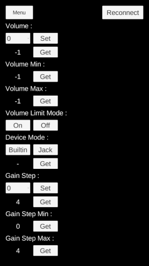

You can adjust the volume of the earphones connected to Moverio.
| function | contents |
|---|---|
| Volume control | Get/set earphone volume |
| Minimum volume acquisition | Get the minimum volume that can be set |
| Maximum volume acquisition | Get maximum configurable volume |
| Maximum volume upper limit mode setting | Setting the maximum mode for maximum volume of earphone output |
| Device mode control | Get/set audio input/output device modes |
| Audio gain step control | Get/set gain adjustment steps for built-in speakers |
| Get minimum audio gain step | Get minimum audio gain step for built-in speakers |
| Get maximum audio gain step | Get maximum audio gain step for built-in speakers |
| Reconnect | Reconnecting Moverio |
The above function is implemented by AudioControl of sample scene

| label | function |
|---|---|
| Volume | Audio Control |
| Volume Min | Minimum volume acquisition |
| Volume Max | Maximum volume acquisition |
| Volume Limit Mode | Maximum volume upper limit mode setting |
| Device Mode | Device mode control |
| Gain Step | Gain step control |
| Gain Step Min | Get minimum audio gain step |
| Gain Step Max | Get maximum audio gain step |
| Reconnect | Reconnect |
Please refer to [Moverio Basic Function SDK Developer’s Guide] for details of the function.